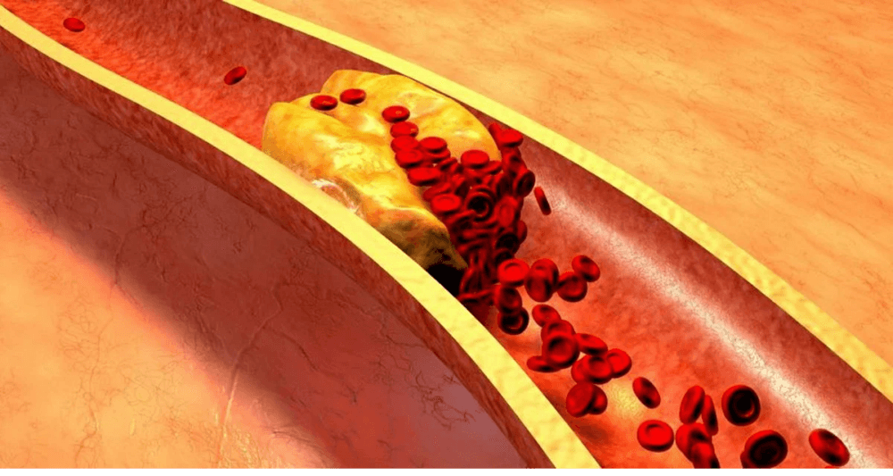

Toată lumea știe că hipertensiunea, accidentul vascular cerebral și atacul de cord sunt consecințele "contaminării" vaselor de sânge cu colesterol. Vasele murdare sunt cauza a 9 din 10 boli cronice presupuse incurabile. Deci, ce este hipertensiunea arterială și de ce este periculoasă?
Hipertensiunea arterială este o boală care afectează fiecare al treilea adult român. În același timp, majoritatea populației nu știe despre această problemă și, prin urmare, nu recurge la nicio prevenire. Printre persoanele care știu despre boala lor, mulți nu primesc un tratament adecvat: iau medicamente neregulat și în doze prea mici sau nu le iau deloc. Această atitudine față de sănătate provoacă multe complicații care pun viața în pericol.
Pentru a evita acest lucru, trebuie mai întâi să primiți un răspuns la următoarele întrebări:

-
Ce ar trebui să știe o persoană despre hipertensiune?
-
De ce sunt vasele de sânge responsabile pentru 85% din sănătatea dvs?
-
Ce altceva otrăvește vasele de sânge în afară de colesterol?
-
4 semne evidente și 7 ascunse ale vaselor de sânge murdare.
-
Cum să curățați în siguranță vasele de sânge acasă?
La aceste întrebări a răspuns Lucian Dorobantu, chirurg cardiac, actual Director de Chirurgie cardiovasculară și cardiacă din București, șeful Departamentului de Chirurgie Cardiacă de la Universitatea din București.
Cristi Tabara: "Spuneați întotdeauna că vasele de sânge sunt responsabile pentru 85% din sănătatea organismului? De ce e așa?"
Lucian Dorobantu: "Care este cel mai mare organ din corpul uman? Puțini oameni știu, dar de fapt cel mai mare organ este sistemul nostru circulator. Vasele nu sunt doar tuburi prin care curge sângele. Acesta este un organ complex ale cărui probleme duc imediat la senzații de durere.
Ce se întâmplă dacă vasele nu sunt tratate:
Bolile vasculare ale picioarelor - duc la vene varicoase, umflături constante și greutate în picioare, la senzații de arsură sau durere insuportabilă în picioare.
Blocarea vaselor care alimentează ficatul - duc la hepatită. După consumul de alimente grase apare senzația de gust amar.
Vasele de sânge murdare din articulații fac cartilajul uscat, slăbit și contaminat. Articulațiile devin fragile și dureroase, apare osteochondroza si hernii.
Vasele canalului anal slăbite - duc la hemoroizi acoperiți cu umflături purpurii.
Vasele slabe ale ochilor – duc la înrăutățirea vederii, în ochi apar valuri. Cataracta se dezvoltă.
Și, desigur, regina bolilor vasculare -
hipertensiunea arterială. Hipertensiunea arterială este mama accidentului vascular cerebral și sora atacului de cord.
"Nu există fericire fără sănătate" - și nu există sănătate fără vase de sânge curate.
Excesul de greutate este strâns legat de vasele de sânge. Vasele înfundate cu colesterol duc la faptul că organele nu sunt hrănite suficient, vasele de sânge nu le pot furniza cantitatea necesară de nutrienți. În acest sens, creierul trimite semnale ca trebuie să mănânci. Și organele încă nu au nutriție din cauza blocării vaselor de sânge. Creierul dă din nou comanda - trebuie să mâncăm. Și așa din nou și din nou.
Doriți să trăiți o viață plină? Curățați și reparați vasele de sânge. Vasele de sânge curate sunt cheia pentru depășirea a 90% din bolile cronice, dintre care unele sunt considerate incurabile."
"Diametrul normal a vasului este cat grosimea unui deget, iar atunci cand avem 5 kg de plăci de colesterol, diametrul se reduce pana la dimensiunea a 4 bețe de chibrit."
Cristi Tabara:
"Profesore, toată lumea știe că colesterolul este dăunător. El este cel care ne înfundă vasele de sânge, restricționează fluxul sanguin și perturbă circulația sângelui. Dar el este singurul de vină?"
Lucian Dorobantu: "Da, așa este. Plăcile de colesterol cunoscute și sub denumirea de "plăci aterosclerotice", sunt responsabile pentru aproximativ 60-70% din contaminarea vasculară. Până la vârsta de 50 de ani se acumulează până la 5 kg de plăci de colesterol. Depozitele de colesterol limitează fluxul sanguin în vase de 4-5 ori.

Dacă aveți peste 45 de ani și nu ați luat niciodată nutraceutice pentru curățarea vaselor de sânge, vă garantez că aveți probleme vasculare. Vasele de sânge sunt înfundate cu colesterol, se formează cheaguri de sânge - procese de îmbătrânire aproape naturale. Desigur, alimentele moderne, pastilele, fumatul și alcoolul accelerează procesul de înfundare de 5-8 ori. Cel mai mic stres, o schimbare a vremii, o furtună, vă afectează imediat sănătatea. Presiunea crește, apar amețeli, tinitus, capul începe să doară, apar durerile articulațiilor.
4 boli cauzate de deteriorarea vaselor de sânge:
-
1. "Hipertensiune arterială"
Principalul simptom al hipertensiunii arteriale sunt durerile de cap. Acest lucru se datorează îngustării vaselor de sânge din creier. În plus, simptomele frecvente ale hipertensiunii arteriale sunt un sentiment de greutate în cap, palpitații și amețeli.
-
2. "Varice"
Venele de pe picioare sunt umflate, neregulate și nenaturale, grele și dureroase. Colesterolul și cheagurile de sânge înfundă venele. Treptat, în ochi apar "stele" vasculare, care apoi se transformă într-o "rețea"vasculară.
-
3. "Hemoroizi"
Când vasele de drenaj din anus se înfundă, hemoroizii se umflă. Dacă vasele de sânge sunt înfundate mai întâi, atunci apar fisuri în anus și apoi o ruptură.
-
4. "Osteocondroză"
Aceasta este o lipsă de circulație a sângelui în cartilaj. Cartilajul se întărește și începe să se uzeze, fără a avea timp să se recupereze. Își pierde capacitatea de a se întreține. Sărurile nu sunt spălate și încep să se acumuleze necontrolat, formând formațiuni chistice.
7 semne de pericol:
-
1. "Edem"
Seara, picioarele se umflă, șosetele strâng gleznele lăsând urme. Umflarea feței și apariția pungilor sub ochi. Umflarea indică faptul că organele dvs. sunt umflate.
-
2. "Tinitus"
De la un scârțâit abia audibil până la țipete puternice care îngreunează concentrarea. Acestea sunt consecințele presiunii crescute a vaselor cerebrale care apasă pe timpan.
-
3. "Amețeli"
Sentimentul de" intoxicație", atacuri ascuțite și bruște de amețeli indică faptul că sistemul vascular este "înfometat". De asemenea, auzul suferă adesea.
-
4. "Insomnia"
Te simți somnoros și letargic, dar nu poți adormi? Motivul este alimentarea insuficientă cu sânge a glandei pituitare. El nu mai produce melatonină, hormonul somnului.
-
5. "Oboseală"
Nu aveți energie. Nu doriți să faceți nimic. Acest sentiment apare atunci când corpul intră în regimul de economisire a energiei. Organele nu primesc suficientă nutriție prin vasele de sânge contaminate, iar organismul încearcă să reducă nivelul de activitate pentru a evita moartea.
-
6. "Probleme de vedere"
"Ceața" în fața ochilor, pete și întuneric în ochi. Acestea sunt simptome ale insuficienței vasculare a ochilor.
-
7. "Dureri articulare"
Din cauza vremii apar dureri articulare. Când va treziți dimineața, nu va simțiți reîmprospătat și nu aveti energie, ci ca un infirm amorțit, semi-paralizat. Lichidul sinovial își pierde proprietățile.
De obicei, persoanele în combinații diferite au mai multe simptome în același timp. În același timp, ele au combinații diferite de simptome diferite. Oamenii încearcă să trateze fiecare boală separat. Pastile pentru presiune, creme pentru vene varicoase, medicamente pentru hemoroizi, geluri pentru osteochondroză. Și, desigur, analgezice. Ei aruncă doar bani, dar cauza tuturor bolilor este întotdeauna aceeași - tulburări circulatorii. Trebuie să începeți cu o curățare generală a vaselor."
"Majoritatea medicamentelor nu ajută și nu vindecă, ci slăbesc și dăunează"
Cristi Tabara:
"care este cel mai eficient mod de a curăța vasele de sânge de colesterol, cheaguri de sânge și calcificări?"
Lucian Dorobantu: "Pentru curățarea în siguranță a vaselor de sânge, pot recomanda doar un singur produs cu o reputație impecabilă - Cardiofort. Prelungește viața cu 12-17 ani, adaugă energie și relaxează.
Cardiofort este un produs 100% natural pe bază de extracte de plante, care, în contact cu apa, trezește substanțe de curățare vii. Acești agenți de curățare mici elimină mucusul colesterolului din vasele de sânge, precum și cheagurile lipite de pereți: calcificări, medicamente rămase. Orice lucru care interferează cu fluxul liber de sânge. Poluarile acumulate cu anii care otrăvesc viața noastră sunt spălate cu ajutorul Cardiofort după 1,5-2 luni de aport regulat.
Durerile de cap și tinitusul (tinitus) dispar cu ele. Creierul alimentat corespunzător cu vase curate, funcționează la viteza unui supercomputer. Gândurile devin clare și distincte.
Senzațiile sunt amplificate, auziți sunete plăcute pe care nu le-ați auzit înainte. Auzul se îmbunătățește, puteți înțelege chiar și șoaptă dintr-o altă cameră.
Aromele capătă culori noi. Respirația este liberă și uniformă. Aerul proaspăt umple plămânii, se răspândește prin corp în valuri plăcute, provocând o senzație de euforie ușoară.
Gustul devine luminos și saturat. Mâncarea simplă vă va oferi o mare plăcere. Mănânci mai puțin, corpul este saturat mai repede. Dorința constantă de dulce și gras dispare.
Articulațiile nu mai dor. "Scârțâitul" dispare complet și apare o netezime a mișcărilor, datorită hidratării restaurate a articulațiilor."
Cristi Tabara:
"Impresionant. De fapt, aceasta este prima dată când am auzit de Cardiofort. Cu toate acestea, am auzit de nutraceutice în general. În Japonia și Israel nutraceuticele au fost aprobate oficial ca tratament. Iar în România aceste medicamente nu sunt încă considerate fiabile. De ce?"
Lucian Dorobantu: "Permiteți-mi să vă povestesc despre neîncredere. În 1928, a fost inventat primul antibiotic - penicilina. El a vindecat cu ușurință dizenteria și tifosul, din care oamenii au murit în mod inevitabil.
Cu toate acestea, majoritatea oamenilor nu credeau că acest lucru ar putea ajuta, deoarece în trecut au fost dezamăgiți de sute de ori de încercările de a vindeca aceste boli. Cei care au fost dezamăgiți a 100-a oară și nu s-au temut de-a 101-a încercare s-au vindecat. Iar cei care au renunțat și au spus: "un alt leac miraculos care nu va ajuta", au murit, chiar dacă scăparea lor era chiar sub nasul lor.
Cum a odată penicilina a învins bolile comune la acea vreme: dizenteria, tifosul și ciuma pneumonică, asa si Cardiofort va elimina bolile vasculare. Primii pași au fost deja făcuți - Japonia, Canada, Coreea, Elveția și Israel au introdus o lege privind curățarea vaselor de sânge cu nutraceutice în loc de terapie medicamentoasă. În România, Cardiofort este prescris oficial doar într-un singur loc - într-un spital din Roma. În el se tratează " elita societății " - miniștri, membri ai Parlamentului, celebrități și alte elite. Aceștia sunt tratați în conformitate cu protocoalele israeliene. Pentru restul cetățenilor noștri, Ministerul Sănătății oferă tratament cu substanțe chimice produse în fabrici aparținând aceleiași elite."
"Îndoielile noastre sunt trădători și din cauza lor pierdem mult din ceea ce am putea obține din cauza fricii de a încerca."
Cristi Tabara:
"Ce se întâmplă dacă încep un tratament de curățare cu Cardiofort?
Cum funcționează acest produs?"
Lucian Dorobantu: "Când moleculele
Cardiofort sunt saturate cu umiditate și oxigen, extractele medicinale dobândesc efectul peroxidului de hidrogen - oxigenarea. Moleculele Cardiofort sunt bombe mici de oxigen. Ele distrug partițiile de colesterol din vasele de sânge și permit sângelui să curgă liber. Acesta este motivul pentru care Cardiofort este atât de eficient - beți extracte vii care funcționează activ. Compoziția capsulelor asigură absorbția instantanee a particulelor vii. Extractele oxigenate sunt ușor absorbite de pereții esofagului. Prin urmare Cardiofort nu provoacă arsuri la stomac, amărăciune în gură, nu irită intestinele și protejează stomacul. Chiar și cu un ulcer, puteți folosi în mod liber Cardiofort."
"Cardiofort este un depozit de extracte medicinale rare care funcționează armonios pentru puritatea și rezistența vaselor de sânge"
Cum se va schimba sănătatea și bunăstarea:
CURĂȚĂ VASELE DE SÂNGE
Extractul de Leonorus cardiaca elimină colesterolul. Ca o daltă, moleculele substanței resping particulele de colesterol care se lipesc de pereții vaselor de sânge. Fluxul sanguin devine nestingherit. Cartilajul începe în cele din urmă să se "hrănească". Zgârierea și scârțâitul în gât, spate și articulații dispar. Genunchii și degetele de la picioare nu mai dor cu timpul.
Circulația sanguină a pielii va fi restabilită - stelele din ochi și rețeaua vasculară vor dispărea. Varicele vor scădea treptat, hemoroizii se vor usca.
APARE ENERGIE
Moleculele de extract de de hamei intră în joc. Acestea captează particulele de colesterol și, atașându-le, le transformă în lipoproteine utile de înaltă densitate, care sunt implicate în defalcarea grăsimilor.
Cardiofort ucide doi iepuri deodată - elimină colesterolul care poluează vasele de sânge și stimulează arderea corectă a grăsimilor. Datorită acestui fapt, simțiți un val puternic de forță, doriți să vă mișcați.
REDUCEREA TENSIUNII
Tocoferolul antioxidant ameliorează spasmele din vasele de sânge. Este similar cu" rădăcina de valeriană " pentru vasele de sânge. Relaxează și calmează vasele de sânge care se îngustează din cauza lipsei fluxului sanguin. Presiunea revine la normal fără probleme și în siguranță. Durerile de cap dispar, tinitusul dispare, plămânii și bronhiile funcționează ușor și fără probleme.
USUREAZA INIMA
Uleiul de rapiță curăță vasele de sânge de cheagurile de sânge. Extractul de cătină diluează sângele. Chiar și anevrismele mici se rezolvă. Depozitele de calciu lăsate de substanțe chimice sunt spălate.
EFECT FLUTURE
Cardiofort este ca bătaia aripilor unui fluture, provocând o reacție în lanț interesantă în spiritul schimbării. Pas cu pas, Cardiofort începe o reacție în lanț care curăță corpul, începând cu purificarea deșeurilor acumulate de-a lungul deceniilor în vasele de sânge.
TREZIRE UȘOARĂ
Te trezești dimineața și te ridici ușor din pat - nu trebuie să te forțezi să te ridici, să-ți tragi și să-ți freci picioarele încătușate, scârțâind spatele și gâtul.
PICIOARE PUTERNICE
Când mergeți la plimbare nu mai trebuie să vă faceți griji cu privire la picioare - mersul pe jos nu este o problemă. Puteți merge toată ziua și picioarele nu vă vor obosi sau umfla.
PACE ABSOLUTĂ
Ești complet calm și relaxat. Nu mai există durere constantă care îți consumă conștiința, împiedicându-te să te concentrezi pe orice altceva. Când nimic nu doare, sunetele și mirosurile obișnuite sunt pline de impresii uitate de mult.
CLARITATEA GÂNDIRII
Chiar și după o zi grea de muncă, te întorci acasă cu o minte clară și strălucitoare. Creierul tău funcționează ca un ceas elvețian fără să te simți obosit.
VISUL PERFECT
Culcat în pat, adormi repede și plăcut. Dispar zilele în care petreci în pat jumătate de noapte întorcând constant perna și somnul nu vine. Acum totul este simplu - decideți când să adormiți, iar corpul vă ascultă comenzile.
"Acesta este un mod uimitor și natural de a trata diferite boli și de a îmbunătăți viața de zi cu zi a unei persoane. Și trebuie să găsești o cale să o adaugi în viața ta."
Programul "Vase curate" activ din .
Cardiofort nu mai este vândut în farmacii.
Motivul conflictului a fost lăcomia rețelei farmaceutice, care a cerut producătorului Cardiofort să adauge încă 39 € pentru fiecare produs vândut! Deja conștienți de marja ridicată a prețului producătorului (costul Cardiofort n unele farmacii din România ajungea la 120 €), companiile farmaceutice au dorit să introducă un tarif suplimentar pentru producător.
Reprezentanții farmaciilor se justifică - spun ei, un astfel de aditiv le permite să supraviețuiască. Cardiofort este un medicament care este cumpărat odată la fiecare 7-10 ani. În plus, după curățarea vaselor pacientul nu mai are nevoie de medicamentele pe care le-a luat în mod constant înainte! Oamenii încetează lupta cu tensiunea arterială și nu mai cumpără analgezice. Aportul de medicamente pentru diabet este redus semnificativ. Și acest lucru duce farmaciile la pierderi. Prin urmare, au cerut cel mai mare preț pentru Cardiofort.
Ca urmare, producătorul Cardiofort - a întrerupt contactele cu toată lumea și farmaciile și a trecut la distribuție numai prin Internet. În primul rând, este corect. Ganditi-va: nu este nevoie să plătești chiria, farmaciile nu au nevoie de mită pentru a vinde acest produs. Deci, Cardiofort este acum disponibil ca o ofertă specială.
Universitatea noastră, împreună cu Centrul Național de Cercetări Medicale în domeniul chirurgiei cardiovasculare și împreună cu producătorul
Cardiofort, au lansat un program ușor în cadrul proiectului telemedicină (Medicină-Internet).
Oricine se poate înregistra pentru a primi Cardiofort în condiții preferențiale, oferta este valabilă până la
sau până la sfârșitul stocurilor la depozitul Regional
Cardiofort. Și toate acestea, în ciuda lipsei de publicitate la radio și televiziune. Oamenii împărtășesc informații, recomandă rudelor și prietenilor.
Condiții de obținere Cardiofort.
Numai pentru uz personal.
Trimiteți o cerere utilizând formularul de pe site-ul nostru oficial.
Toate acestea au fost făcute pentru a combate speculațiile cu privire la acest produs, când revanzatorii au încercat să cumpere picăturile Cardiofort în cantități mari și să le revândă la propria marjă.
Trimiteți o cerere prin formularul oficial al programului nostru. Formularul oficial de cerere este o garanție a calității și protecției împotriva speculatorilor.